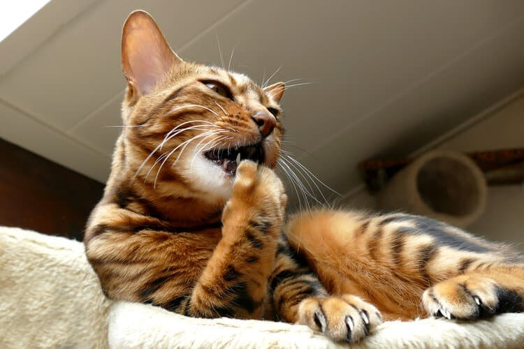

Common reasons why your cat might be biting, chewing, or scratching itself.
Most cats are meticulous groomers, but what happens when the behavior goes into overdrive? For a variety of reasons, some cat licking, scratching, and chewing behaviors become compulsive, which can annoy you and damage your pet’s skin and coat.
If your cat is scratching, licking, or chewing themselves compulsively, it is likely you regularly catch them in the act. But if you don’t, your first clue may be the disappearance of your cat’s fur, often in strips along their back or stomach. Cats with self-mutilating behaviors may also cause red, irritated areas called hot spots to form, but they are less likely than dogs to do so.
Although compulsive cat scratching, licking, or chewing behaviors can develop in any animal, they are more commonly observed in Siamese cats and other Oriental breeds. Female cats are more likely than males to lick, chew, or pull on their fur.
Because there are a number of medical problems that may result in scratching and licking behaviors, be sure to consult with your veterinarian to help determine the cause and the best course of action.
Why Do Cats Compulsively Scratch, Lick, or Chew?
Parasites.Parasites. Fleas are often the culprits behind compulsive cat scratching or cat licking behaviors. Because cats are excellent groomers, they may actually remove all traces of fleas. If you notice your cat licking their lower back obsessively, with or without scabs on the neck, it is a sign that fleas might be causing the problem. Other parasites, including ticks, mites, and ringworm, can also prompt scratching, licking, or chewing.
Allergies. Just as some people develop skin irritations in response to certain foods or environmental triggers, cats may have itchy, irritated skin if they are allergic to something in their environment.
Dry skin. Dry winter air or nutritional inadequacies can contribute to dry, flaky skin that gets your cat started licking or scratching in search of relief.
Pain. If you notice your cat licking or biting at the same spot over and over again, it could be that they are experiencing pain or discomfort in that area.
Boredom, anxiety, or compulsive disorder. Compulsive cat chewing, scratching, or licking behaviors often develop in cats who are bored, stressed, or anxious. These mental disorders are more likely to occur in indoor cats, which may be due to the fact that they receive less exercise and excitement than outdoor cats. Compulsive disorders often begin when there are changes in a cat’s environment, including a new animal or baby in the house or a move to a new location. Also, behaviors that started in response to a medical problem sometimes persist as compulsions after the condition is resolved.